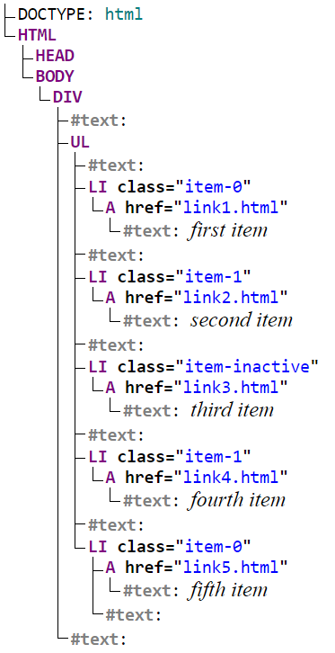

13.1.lxml
Windows 10
Python 3.7.7 @ MSC v.1916 64 bit (AMD64)
Latest build date 2020.10.09
lxml version: 4.5.2
XPath，全称 XML Path Language，即 XML 路径语言，它是一门在 XML 文档中查找信息的语言。它最初是用来搜寻 XML 文档的，但是它同样适用于 HTML 文档的搜索。
XPath 的选择功能十分强大，它提供了非常简洁明了的路径选择表达式。另外，它还提供了超过 100 个内建函数，用于字符串、数值、时间的匹配以及节点、序列的处理等。几乎所有我们想要定位的节点，都可以用 XPath 来选择。
XPath 于 1999 年 11 月 16 日成为 W3C 标准，它被设计为供 XSLT、XPointer 以及其他 XML 解析软件使用，更多的文档可以访问其官方网站。
Python 的 lxml 库提供了使用XPath 进行 HTML 解析的功能。
XPath 常用规则
下表列出了 XPath 的常用匹配规则：
| 表达式 | 描述 |
|---|---|
| nodename | 选取此节点的所有子节点 |
| / | 从根节点选取直接子节点 |
| // | 从当前节点选取直接子节点和间接子节点（包括当前节点） |
| . | 选取当前节点 |
| .. | 选取当前节点的父节点 |
| @ | 选取属性 |
比如，下面的 XPath 规则的意思是：选择所有名称为 title，同时属性 lang 的值为 eng 的节点。
//title[@lang='eng']
实例引入
现在通过实例来感受一下使用 XPath 来对网页进行解析的过程，相关代码如下：
from lxml import etree
text = '''
<div>
<ul>
<li class="item-0"><a href="link1.html">first item</a></li>
<li class="item-1"><a href="link2.html">second item</a></li>
<li class="item-inactive"><a href="link3.html">third item</a></li>
<li class="item-1"><a href="link4.html">fourth item</a></li>
<li class="item-0"><a href="link5.html">fifth item</a>
</ul>
</div>
'''
# 调用 HTML 类进行初始化
html = etree.HTML(text)
result = etree.tostring(html)
print(result.decode('utf-8'))
<html><body><div>
<ul>
<li class="item-0"><a href="link1.html">first item</a></li>
<li class="item-1"><a href="link2.html">second item</a></li>
<li class="item-inactive"><a href="link3.html">third item</a></li>
<li class="item-1"><a href="link4.html">fourth item</a></li>
<li class="item-0"><a href="link5.html">fifth item</a>
</li></ul>
</div>
</body></html>
这里的HTML 文本中的最后一个 li 节点是没有闭合的，但是 etree 模块可以自动修正 HTML 文本。可以看到，经过处理之后，li 节点标签被补全，并且还自动添加了 body、html 节点。
也可以直接读取文本文件进行解析：
from lxml import etree
test_html_path = '../datasets/file/test.html'
html = etree.parse(test_html_path, etree.HTMLParser())
result = etree.tostring(html)
print(result.decode('utf-8'))
<!DOCTYPE html PUBLIC "-//W3C//DTD HTML 4.0 Transitional//EN" "http://www.w3.org/TR/REC-html40/loose.dtd">
<html><body><div>
<ul>
<li class="item-0"><a href="link1.html">first item</a></li>
<li class="item-1"><a href="link2.html">second item</a></li>
<li class="item-inactive"><a href="link3.html">third item</a></li>
<li class="item-1"><a href="link4.html">fourth item</a></li>
<li class="item-0"><a href="link5.html">fifth item</a>
</li></ul>
</div></body></html>
这次的输出结果多了一个 DOCTYPE 的声明，不过对解析无任何影响。
该html文档的DOM图如下：

所有节点
一般用 // 开头的 XPath 规则来选取所有符合要求的节点。这里以前面的 HTML 文本为例，如果要选取所有节点，可以这样实现：
from lxml import etree
html = etree.parse(test_html_path, etree.HTMLParser())
result = html.xpath('//*')
result
[<Element html at 0x1953a923108>,
<Element body at 0x1953a973388>,
<Element div at 0x1953a9734c8>,
<Element ul at 0x1953a94d088>,
<Element li at 0x1953a94dec8>,
<Element a at 0x1953a94d9c8>,
<Element li at 0x1953a94d488>,
<Element a at 0x1953a94dd48>,
<Element li at 0x1953a94d4c8>,
<Element a at 0x1953a94d288>,
<Element li at 0x1953a96ee48>,
<Element a at 0x1953a96ea88>,
<Element li at 0x1953a96e3c8>,
<Element a at 0x1953a96e188>]
这里使用 * 代表匹配所有节点，也就是整个 HTML 文本中的所有节点都会被获取。
也可以指定节点名称，例如获取所有 li 节点：
from lxml import etree
html = etree.parse(test_html_path, etree.HTMLParser())
result = html.xpath('//li')
result
[<Element li at 0x19539828688>,
<Element li at 0x195398826c8>,
<Element li at 0x19539906f08>,
<Element li at 0x19539906ac8>,
<Element li at 0x19539906cc8>]
子节点
通过 / 或 // 查找元素的直接子节点或所有子节点。假如选择 li 节点的所有直接 a 子节点：
from lxml import etree
html = etree.parse(test_html_path, etree.HTMLParser())
result = html.xpath('//li/a')
result
[<Element a at 0x1953a965a08>,
<Element a at 0x1953a965508>,
<Element a at 0x1953a965448>,
<Element a at 0x1953a965988>,
<Element a at 0x1953a965e88>]
//li 用于选中所有 li 节点，/a 用于选中 li 节点的所有直接子节点 a，二者组合在一起即获取所有 li 节点的所有直接 a 子节点。
同样的结果有多种获取方式，例如，获取 ul 节点下的所有 a 节点可以得到相同的结果：
from lxml import etree
html = etree.parse(test_html_path, etree.HTMLParser())
result = html.xpath('//ul//a')
result
[<Element a at 0x1953a987888>,
<Element a at 0x1953a9878c8>,
<Element a at 0x1953a987908>,
<Element a at 0x1953a987948>,
<Element a at 0x1953a987788>]
如果用 //ul/a，则无法获取任何结果了。因为 / 用于获取直接子节点，而在 ul 节点下没有直接的 a 子节点，只有 li 节点，所以无法获取任何匹配结果。
父节点
可以通过子节点，使用..来查找父节点。
例如，首先选中 href 属性值为 link4.html 的 a 节点，然后再获取其父节点，然后再获取该父节点的class 属性的值，代码如下：
from lxml import etree
html = etree.parse(test_html_path, etree.HTMLParser())
result = html.xpath('//a[@href="link4.html"]/../@class')
print(result)
['item-1']
也可以通过 parent:: 来获取父节点，代码如下：
from lxml import etree
html = etree.parse(test_html_path, etree.HTMLParser())
result = html.xpath('//a[@href="link4.html"]/parent::*/@class')
print(result)
['item-1']
属性匹配
筛选节点时，可以用@符号进行属性过滤。例如，要选取 class 为 item-0 的 li 节点:
from lxml import etree
html = etree.parse(test_html_path, etree.HTMLParser())
result = html.xpath('//li[@class="item-0"]')
result
[<Element li at 0x1953a94d588>, <Element li at 0x1953a94dd48>]
文本获取
XPath 中的 text 方法可以获取节点中的文本。尝试获取 li 节点中的文本：
from lxml import etree
html = etree.parse(test_html_path, etree.HTMLParser())
result = html.xpath('//li[@class="item-0"]/text()')
print(result)
['\r\n ']
结果显示并没有获取到任何文本，只获取到了一个换行符，这是为什么呢？
因为 XPath 中 text 方法前面是 /，/ 的含义是选取直接子节点，而 li 的直接子节点是 a 节点，文本是在 a 节点内部的，而不是直接包含在 li 节点的内部。所以这里匹配到的结果就是被修正的那个 li 节点内部的文本，即换行符。
即选中的是这两个节点：
<li class="item-0"><a href="link1.html">first item</a></li>
<li class="item-0"><a href="link5.html">fifth item</a>
</li>
第一个li节点内部是没有文本的，而第二个li节点因为被自动修正，内部被添加了换行符。
因此，如果想获取 li 节点的文本，就有两种方式：
- 先选取 a 节点再获取文本
- 使用 //
接下来，我们来看下二者的区别。
首先，选取到 a 节点再获取文本，代码如下：
from lxml import etree
html = etree.parse(test_html_path, etree.HTMLParser())
result = html.xpath('//li[@class="item-0"]/a/text()')
print(result)
['first item', 'fifth item']
可以看到，这里的返回值是两个，内容都是属性为 item-0 的 li 节点的文本，这也印证了前面属性匹配的结果是正确的。
这里我们是逐层选取的，先选取了 li 节点，又利用 / 选取了其直接子节点 a，然后再选取其文本，得到的结果恰好是符合我们预期的两个结果。
再来看下用另一种方式（即使用 //）选取的结果，代码如下：
from lxml import etree
html = etree.parse(test_html_path, etree.HTMLParser())
result = html.xpath('//li[@class="item-0"]//text()')
print(result)
['first item', 'fifth item', '\r\n ']
这里的返回结果是 3 个。因为这里是选取当前节点以及所有子节点的文本，前两个是 li 的子节点 a 节点内部的文本，最后一个是 li 节点内部的文本。
属性值获取
其实在父节点这一节中已经展示过获取节点属性值的方法，即通过@符号。例如，获取所有 li 节点下所有 a 节点的 href 属性，代码如下：
from lxml import etree
html = etree.parse(test_html_path, etree.HTMLParser())
result = html.xpath('//li/a/@href')
print(result)
['link1.html', 'link2.html', 'link3.html', 'link4.html', 'link5.html']
注意获取属性值和属性匹配的区别。
属性多值匹配
有时候，某些节点的某个属性可能有多个值，例如：
from lxml import etree
text = '''
<li class="li li-first"><a href="link.html">first item</a></li>
'''
html = etree.HTML(text)
result = html.xpath('//li[@class="li"]/a/text()')
print(result)
[]
这里 HTML 文本中 li 节点的 class 属性有两个值 li 和 li-first，此时如果还想用之前的属性匹配获取，就无法匹配了。
这时需要用 contains 方法：
from lxml import etree
text = '''
<li class="li li-first"><a href="link.html">first item</a></li>
'''
html = etree.HTML(text)
result = html.xpath('//li[contains(@class, "li")]/a/text()')
print(result)
['first item']
contains 方法的第一个参数是属性名称，第二个参数是属性值，只要此属性包含所传入的属性值，就会被匹配到。
该方法在某个节点的某个属性有多个值时经常用到（如节点的 class 属性值通常有多个）。
多属性匹配
有时候需要根据多个属性确定一个节点，这时就需要同时匹配多个属性。此时可以使用运算符 and 来连接，示例如下：
from lxml import etree
text = '''
<li class="li li-first" name="item"><a href="link.html">first item</a></li>
'''
html = etree.HTML(text)
result = html.xpath('//li[contains(@class, "li") and @name="item"]/a/text()')
print(result)
['first item']
这里的 li 节点又增加了一个属性 name。要确定这个节点，需要同时根据 class 和 name 属性来选择，一个条件是 class 属性里面包含 li 字符串，另一个条件是 name 属性为 item 字符串，二者需要同时满足，需要用 and 操作符相连，相连之后置于中括号内进行条件筛选。
这里的 and 是 XPath 的运算符。XPath还有很多运算符，如 or、mod 等，在此总结为下表。
| XPath运算符 | 描 述 | 实 例 | 返回值 |
|---|---|---|---|
| or | 或 | age=19 or age=20 | 如果 age 是 19，则返回 true。如果 age 是 21，则返回 false |
| and | 与 | age>19 and age<21 | 如果 age 是 20，则返回 true。如果 age 是 18，则返回 false |
| mod | 计算除法的余数 | 5 mod 2 | 1 |
| 计算两个节点集 | //book | ||
| + | 加法 | 6 + 4 | 10 |
| - | 减法 | 6 - 4 | 2 |
| * | 乘法 | 6 * 4 | 24 |
| div | 除法 | 8 div 4 | 2 |
| = | 等于 | age=19 | 如果 age 是 19，则返回 true。如果 age 是 20，则返回 false |
| != | 不等于 | age!=19 | 如果 age 是 18，则返回 true。如果 age 是 19，则返回 false |
| < | 小于 | age<19 | 如果 age 是 18，则返回 true。如果 age 是 19，则返回 false |
| <= | 小于或等于 | age<=19 | 如果 age 是 19，则返回 true。如果 age 是 20，则返回 false |
| > | 大于 | age>19 | 如果 age 是 20，则返回 true。如果 age 是 19，则返回 false |
| >= | 大于或等于 | age>=19 | 如果 age 是 19，则返回 true。如果 age 是 18，则返回 false |
此表参考来源：http://www.w3school.com.cn/xpath/xpath_operators.asp。
按序选择
有时候，我们在选择的时候某些属性可能同时匹配了多个节点，但是只想要其中的某个节点，如第二个节点或者最后一个节点，这时该怎么办呢？
这时可以利用中括号传入索引的方法获取特定次序的节点，示例如下：
from lxml import etree
text = '''
<div>
<ul>
<li class="item-0"><a href="link1.html">first item</a></li>
<li class="item-1"><a href="link2.html">second item</a></li>
<li class="item-inactive"><a href="link3.html">third item</a></li>
<li class="item-1"><a href="link4.html">fourth item</a></li>
<li class="item-0"><a href="link5.html">fifth item</a>
</ul>
</div>
'''
html = etree.HTML(text)
result = html.xpath('//li[1]/a/text()')
print(result)
result = html.xpath('//li[last()]/a/text()')
print(result)
result = html.xpath('//li[position()<3]/a/text()')
print(result)
result = html.xpath('//li[last()-2]/a/text()')
print(result)
['first item']
['fifth item']
['first item', 'second item']
['third item']
第一次选择时，只选取第一个 li 节点，中括号中传入数字 1 即可。注意，Xpath的索引是以 1 开始的，不是以 0 开始。
第二次选择时，只选取最后一个 li 节点，中括号中调用 last 方法即可，返回的便是最后一个 li 节点。
第三次选择时，选取位置小于 3 的 li 节点，也就是位置序号为 1 和 2 的节点，得到的结果就是前两个 li 节点。
第四次选择时，选取倒数第三个 li 节点，中括号中调用 last 方法再减去 2 即可。因为 last 方法代表最后一个，在此基础减 2 就是倒数第三个。
这里我们使用了 last、position 等方法。在 XPath 中，提供了 100 多个方法，包括存取、数值、字符串、逻辑、节点、序列等处理功能，它们的具体作用可以参考：http://www.w3school.com.cn/xpath/xpath_functions.asp。
节点轴选择
XPath 提供了很多节点轴选择方法，包括获取子元素、兄弟元素、父元素、祖先元素等，示例如下：
from lxml import etree
text = '''
<div>
<ul>
<li class="item-0"><a href="link1.html"><span>first item</span></a></li>
<li class="item-1"><a href="link2.html">second item</a></li>
<li class="item-inactive"><a href="link3.html">third item</a></li>
<li class="item-1"><a href="link4.html">fourth item</a></li>
<li class="item-0"><a href="link5.html">fifth item</a>
</ul>
</div>
'''
html = etree.HTML(text)
result = html.xpath('//li[1]/ancestor::*')
print(result)
result = html.xpath('//li[1]/ancestor::div')
print(result)
result = html.xpath('//li[1]/attribute::*')
print(result)
result = html.xpath('//li[1]/child::a[@href="link1.html"]')
print(result)
result = html.xpath('//li[1]/descendant::span')
print(result)
result = html.xpath('//li[1]/following::*[2]')
print(result)
result = html.xpath('//li[1]/following-sibling::*')
print(result)
[<Element html at 0x1953a96e288>, <Element body at 0x1953a8f4b48>,
<Element div at 0x1953a8f4c48>, <Element ul at 0x195398ea148>]
[<Element div at 0x1953a8f4c48>]
['item-0']
[<Element a at 0x1953a8f4ac8>]
[<Element span at 0x1953a8f4b48>]
[<Element a at 0x1953a9330c8>]
[<Element li at 0x1953a8f4b48>, <Element li at 0x1953a8f4ac8>,
<Element li at 0x1953a8f4c48>, <Element li at 0x1953a933588>]
第一次选择时，调用了 ancestor 轴，可以获取所有祖先节点。其后需要跟两个冒号，然后是节点的选择器，这里我们直接使用 *，表示匹配所有节点，因此返回结果是第一个 li 节点的所有祖先节点，包括 html、body、div 和 ul。
第二次选择时，又加了限定条件，这次在冒号后面加了 div，这样得到的结果就只有 div 这个祖先节点了。
第三次选择时，调用了 attribute 轴，可以获取所有属性值，其后跟的选择器还是 *，这代表获取节点的所有属性，返回值就是 li 节点的所有属性值。
第四次选择时，调用了 child 轴，可以获取所有直接子节点。这里我们又加了限定条件，选取 href 属性为 link1.html 的 a 节点。
第五次选择时，调用了 descendant 轴，可以获取所有子孙节点。这里我们又加了限定条件获取 span 节点，所以返回的结果只包含 span 节点而不包含 a 节点。
第六次选择时，调用了 following 轴，可以获取当前节点之后的所有节点。这里我们虽然使用的是 * 匹配，但又加了索引选择，所以只获取了第二个后续节点。
第七次选择时，调用了 following-sibling 轴，可以获取当前节点之后的所有同级节点。这里我们使用 * 匹配，所以获取了所有后续同级节点。
以上是 XPath 轴的简单用法，更多轴的用法可以参考：http://www.w3school.com.cn/xpath/xpath_axes.asp。